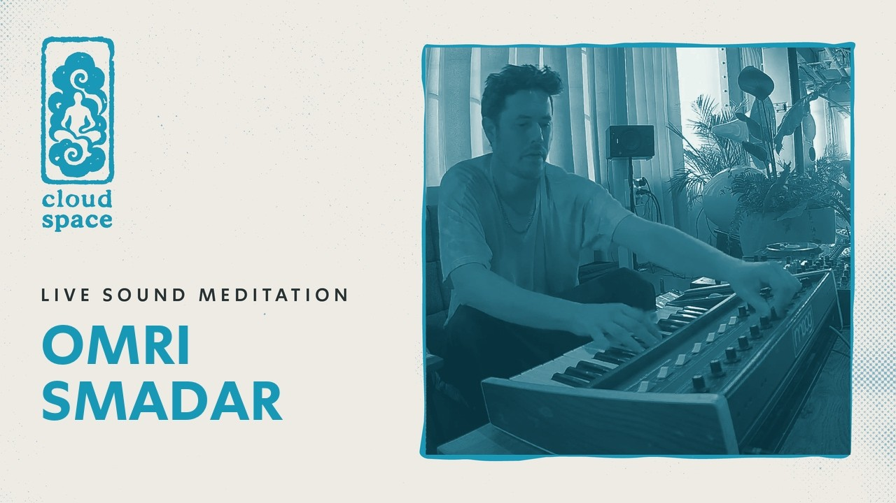
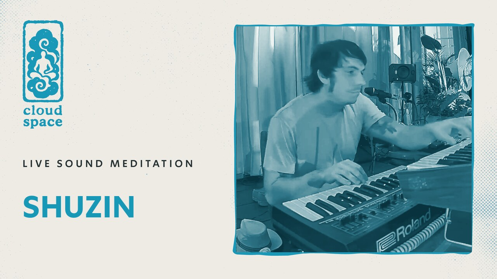

61 דק'עמרי סמדר
מסע אלקטרוני היפנוטי מ-DJ, מפיק ומוזיקאי עם רקע עמוק בקלאסי וג'אז, מהאמנים האלקטרוניים המבוקשים בישראל. אמן בית של סול תרפי.
THE ARCHIVE · CLOUD SPACE
כל מדיטציית סאונד בקלאוד מוקלטת במלואה, מוזמנים לצלול לספרייה כולה שלנו

61 דק'מסע אלקטרוני היפנוטי מ-DJ, מפיק ומוזיקאי עם רקע עמוק בקלאסי וג'אז, מהאמנים האלקטרוניים המבוקשים בישראל. אמן בית של סול תרפי.

58 דק'מסע אלקטרוני מאמן מולטידיסציפלינרי, מהיוצרים המקוריים בסצנת האינדי והאלקטרוניקה הישראלית.
 59 דק'
59 דק'
מסע קולי בין שכבות של לופים, טקסטורות ושקט, מהמיצגים הייחודיים שנוצרו במרחב.
 63 דק'
63 דק'
חצוצרה חיה מעל מבחר תקליטי ג'אז רוחני.
 68 דק'
68 דק'
סאונדסקייפס ומרחבים אלקטרוניים אטמוספריים מאחד היוצרים הישראלים המושמעים בעולם.
 60 דק'
60 דק'
הסשן שפתח את קלאוד ספייס - צלילה אלקטרונית עמוקה מצמד האמנים הוותיק.